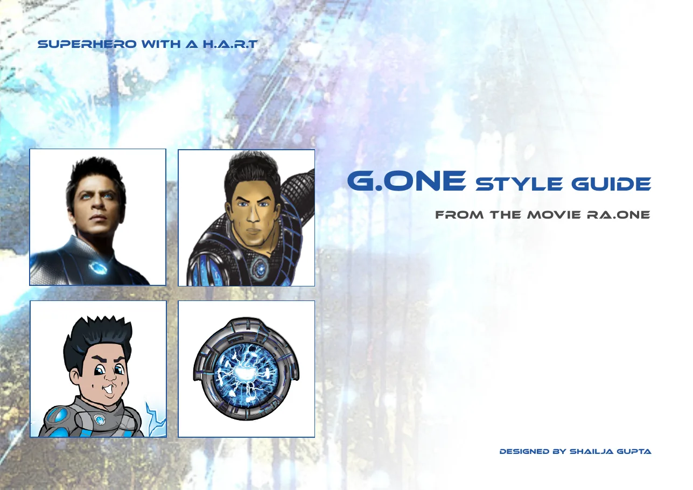

Part II · The First Digital Empire Starts With…, 2000 to 2013 · 9 of 57
Chapter 7 · Shah Rock Jaan and G.One: the dream that would not die
The website gave him a second self. (Analysis)
In the Aryan Infomatics years the author and he created a cartoon character for the screen of a computer: ShahRocK, with a companion called Bubbles. The character grew up into Shah Rock Jaan. (Recollection) [Unverified] the year the character was first drawn and where it first appeared; the author’s files would settle both. A star who had become a myth on the cinema screen now had a drawing of himself made for a monitor. (Analysis)
The company closed. The character did not. (Recollection)
Eleven years later the studio he now owned made a superhero film about a game designer whose creation steps out of the code. Its hero was called G.One. The author created the illustrated G.One art for the campaign, its style guide, a smaller version called Little G.One, and the G.One comic. (Recollection; the style guide and comic are in the author’s archive) Legend has it, in her telling, that Little G.One was drawn from the original alter ego, Shah Rock Jaan, created in the tech start-up named after his son. (Recollection) The live-action G.One belongs to Red Chillies; the illustrated character and Shah Rock Jaan are the author’s own work. (Recollection; rights as the author states them)
[image: G.One Style Guide, from the movie Ra.One, designed by Shailja Gupta]

The G.One Style Guide, cover: the live-action hero, the illustrated hero, Little G.One and the H.A.R.T. (The author’s archive)
What they talked about. During Ra.One, by the author’s account, the two of them kept returning to one idea: to bring SRKWorld back, and to use G.One’s merchandise and game to do it. The superhero was not only a film to be sold. To him, in her recollection, it was a way back into the house he had built in 2000 and had to close. (Recollection) No public statement by Khan or Red Chillies confirms this plan, and this book presents it as the author’s testimony, not as company strategy. (Method note)
That is why this Part is called The First Digital Empire Starts With… and not Ra.One. If the obsession began in 2000, then Ra.One is not the beginning of his digital empire. It is the moment an earlier dream came back in a new body. The failed venture is not a footnote to the superhero. It is his origin story. (Analysis)
Today Shah Rock Jaan carries no name or likeness of Shah Rukh Khan. He is an original cartoon, the brand on the fan merchandise of this book’s campaign. (Fact)